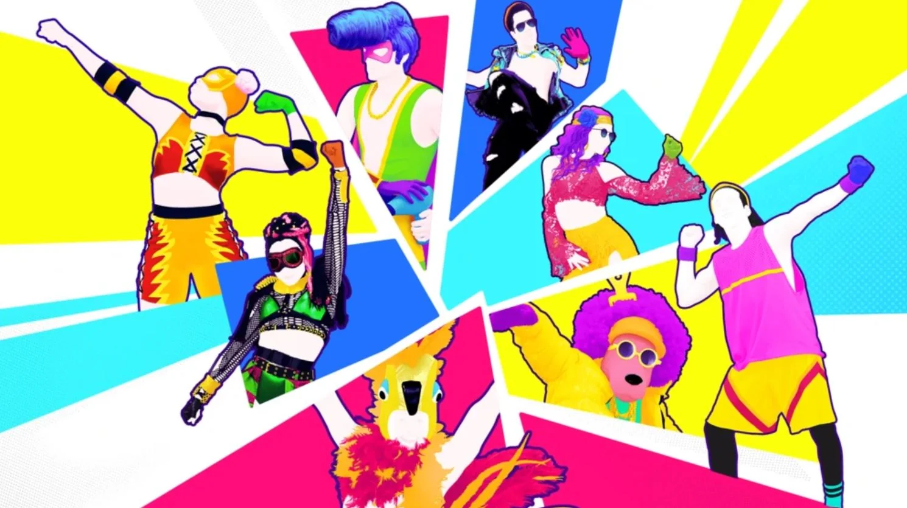
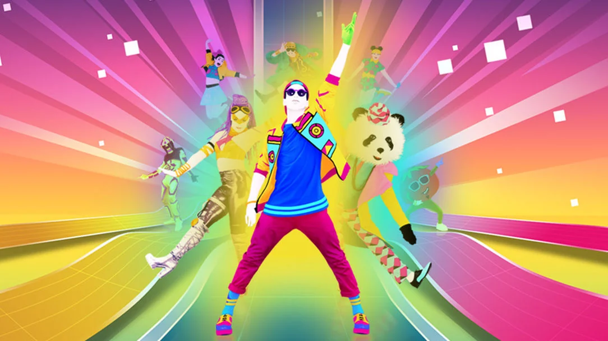

Turn on your
camera.
Motion tracking with your Windows webcam. Use the familiar sensor controls and jump right in.
WEBCAM TRACKING ↗
Bring the dance floor to your room. Track your moves with a webcam or phone, team up with friends, and make every session yours.
All the fun of a dance setup, right from your own space. Pick a camera, connect and play.
Motion tracking with your Windows webcam. Use the familiar sensor controls and jump right in.
Pair the local WebApp using a QR code. Use your phone camera over the same Wi-Fi network.
Use Party Master to invite local friends or add rival dancing bots with different challenge levels.
More than tracking in Full. Customize your Player Card, collect rewards, explore Quiz Time and other extras in the complete edition.
Compare versionsSee how Legacy Sensor works on Windows. These are actual screenshots from Legacy Sensor v1.7.0 Beta and Lite tests — not mockups.
Camera selection, frame rate, resolution and tracking settings — without the extras.
See your custom dancer card, level, XP and dance-session progress.
Choose avatars and styles, preview the look and save your Player Card.
A colourful mouse-controlled mini-game with difficulty choices, XP and coins.
Bring up to five bots with Easy, Medium or Hard to Beat timing.
Actual interface screenshots from desktop tests. Features and visuals may vary by edition and release.
Same core sensor. Choose the experience that feels right for you.
Tracking, WebApp and Party Master — plus personalized Player Cards, avatars, rewards, Quiz Time and extra modes.
A cleaner, lighter edition designed to start faster. Only Settings, Camera, Tracking, WebApp and Party Master — no extra minigames or customization.
| WHAT'S INSIDE? | FULL | LITE |
|---|---|---|
| Camera & tracking engine | ✓ | ✓ |
| Local WebApp / phone pairing | ✓ | ✓ |
| Party Master & dancing bots | ✓ | ✓ |
| Player Card, avatars & Locker Room | ✓ | — |
| Quiz Time, rewards & other extras | ✓ | — |
| Simplified interface / designed for quicker launch | — | ✓ |
Open WebApp on your iPhone or Android phone. Scan the QR code in Legacy Sensor and connect over the same local Wi-Fi — no player account needed.
Tested or explored with selected community PC setups. A matching build or Kinect10.dll bridge may be required; game compatibility is not universal.

Detection has worked with compatible older Kinect10.dll builds. Coach selection and mapping with newer builds is still under investigation; results depend on the game and bridge version.
COACH MAPPING UNDER INVESTIGATIONDreyn community & setup ↗
Legacy Just Dance PC by DIEGUINHODG is the recommended community game for Legacy Sensor. Exact compatibility can vary by game build, installation and sensor configuration.
RECOMMENDED COMMUNITY GAMELegacy Just Dance community ↗Questions about a community PC project? Visit its existing Discord community for guides, announcements and compatibility discussions.
Community and support for the Legacy Just Dance project by DIEGUINHODG.
Join community Discord ↗Build discussions, setup guidance and Kinect10.dll compatibility information.
Join community Discord ↗These invitations were present on the older Legacy Sensor site. Third-party Discord invites may expire; neither server is presented as an official Legacy Sensor support server.
Choose Full or Lite, or open the release archive for earlier Windows and Linux builds.
No. Legacy Sensor works without a player account. Use the camera or connect your local phone WebApp and start playing.
Lite keeps Settings, Camera, Tracking, WebApp and Party Master. It leaves out Player Card, customization, rewards, Quiz Time and other extras, with a simplified interface designed for quicker startup.
Connect the phone and PC to the same Wi-Fi, start Phone Sensor in the PC app and scan its QR code. Browser security prompts may depend on your local setup.
Lite is designed to keep the same core motion tracking as the Full edition. Real-world FPS depends on hardware and camera settings.
Compatibility is build-dependent and experimental for some community ports. Check the compatibility section and the current release notes.
Some older Legacy Sensor builds received malware-family detections, including “SilverFox” classifications. A detection alone does not establish whether the file is malicious or a false positive. A preliminary source review did not reveal obvious password- or cookie-stealing code in the examined sources, but that is not proof that a distributed EXE is safe. Always download from the project links, scan the exact file and compare its hash with a trusted release when available. Do not bypass a security warning just to run the app.
Not yet. Earlier source reviews identified sensitive local WebApp TLS-key placement and firewall-rule handling that require additional hardening. We do not claim the executable has been independently certified or that every antivirus alert is false. If you find a suspicious detection, share its file hash and a report through the community.
No. Legacy Sensor uses a webcam or supported camera source for motion tracking. A game-specific bridge may still be needed if you use a community PC game port expecting Kinect data.
Try 640 × 480 and 30 FPS with a well-lit area. If your PC is busy, lower preview rendering load before changing tracking accuracy. Your actual tracking FPS may be lower than camera FPS.
Legacy Sensor Full and Lite are free community beta builds. Download only from the project’s published release pages.
Core webcam tracking and Party Master bots are designed to work locally. Phone pairing uses your local Wi-Fi network and browser; it does not require a player account.
The desktop app can use a supported camera source, while the separate Phone Sensor WebApp can pair over QR on your local network. Available slots and player behavior depend on the selected mode and game.
Download a Linux ZIP from Older Versions, extract it, make the included launcher executable (for example with chmod +x) and start it on a supported Linux Mint / Ubuntu-based system. File names vary between releases.
No. Legacy Sensor is an independent, unofficial fan project by ItsVexor and is not endorsed by Ubisoft or Just Dance.
Check the troubleshooting page and the community links above. For crashes, note your release version, Windows build, camera model and the last visible error. Never post private keys, passwords or unredacted pairing tokens.